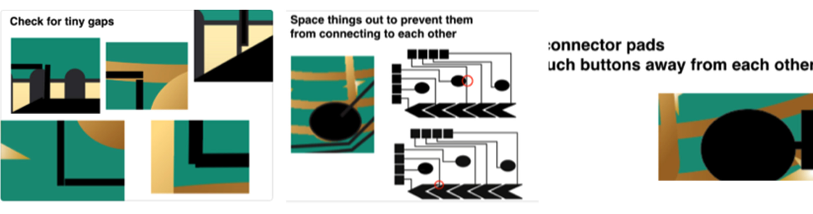

6.810 Engineering Interactive Technologies (fall 2021)
Lab1: Circuit Drawings and Conductive Inkjet Printing
In this lab, you will first create the circuit drawing for your music card and then print out the circuit using conductive inkjet printing.

Steps:
- Circuit Design: Create a 2D drawing that contains the touch buttons, slider segments, and wires.
- Conductive Silver Inkjet Printing: Print your design with conductive inkjet printing.
Deliverables:
At the end of the lab, upload to your student google drive:
- the circuit drawing (.pdf file format) you used for conductive inkjet printing
- two photos showing the front and back of your inkjet printed card
(1) Install Drawing Program and Download Visual Design File
Download and Install Drawing Program: We recommend to use Adobe Illustrator, as all MIT students have access to free Adobe Creative Cloud here. All our instructions will be based on Adobe Illustrator. If you use a different drawing program, that's fine but we may be less knowledgable on how to use it and may not be able to help you as much.
Download and Open Visual Design File: To get started, download the visual design file for our music card here and open it in your drawing program.
Adjust the Document Settings: Once you opened the design file, adjust the document settings in the following way:
- Set Document Color Mode to CMYK: Since we will print our document later, please set the document color mode to CMYK (not RGB, which is for on-screen documents). please include explanation how to do this in Illustrator
- Set Units to mm: If your drawing is still set to 'pts' as a measurement unit, set it to mm or inch. please include explanation how to do this in Illustrator
(2) Add Touch Buttons
For our interactive card, we want to add three touch buttons, one on each note (we will later use them to go to the next/previous song and pause/play the song). Touch-buttons consist of one shape + one wire. One end of the wire connects to the touch button shape and the other end connects to a connector pad, which will in turn connect to the microcontroller.

Create a New Layer: Start by creating a new layer in your design file for the circuit design please include how students can make a new layer. You need to create the circuit design on a separate layer than the visual design because later you need to export two files separately, the visual design in one pdf and the circuit design in a separate pdf. Using a separate layer for each allows you to turn each part of the design on/off quickly for export.
Draw the Touch Button Shape: Once you created your circuit design layer, draw the first touch button shape on it. A touch button should be large enough for a user's finger. The size of a finger tip is roughly an area of 2cm x 2cm. In the design we gave you, the size of each note body is roughly the size of a finger pad, so as long as you make a shape the size of the note it should be fine. please include how students can make a touch button shape
Draw the Wire: Next, draw a wire from the touch button to the edge of the card (we recommend you route all your wires to the right edge of the card). We typically draw 'rectangles' for the wires rather than 'lines' since a rectangle allows us to see its 'width' in the shape properties. Your wire should be 1mm thick. The thickness of the wire determines its conductivity (larger cross-section == higher conductivity). With 1mm we are on the safe side given the conductive ink we use and its resistance.
Draw the Connector Pad: One end of your wire connects to your touch button, the other end of your wire will connect to a connector pad which we will later use to connect to the ESP microcontroller. The connector pad for the microcontroller needs to be large enough to connect to a crocodile clamp. Therefore, the connector pad should be 1cm x 1cm to be on the safe side. Make sure your connector pads are close enough to the border so that a crocodile clamp can reach it (recommended to have lesser than 5mm distance from the border).
Adjust Color of Lines/Shapes: Finally, make sure your touch button, wire, and connector pad all have the correct color assigned. The color for your circuit design should be set to full CMYK (255,255,255,255) since the specific printer we use has a CMYK cartridge, which we filled with silver ink. By setting all four channels to the maximum, we will maximize the amount of silver that will be deposited, which ensures our circuit will have maximum conductivity.
Repeat all steps for the other two touch buttons.
(3) Add Touch Slider
In addition, the piano area should serve as a volume slider, i.e. if we drag our finger from left to right, the volume of the music that is playing will increase.
Discrete vs. Continous Sliders: Touch-sliders consist of multiple touch buttons linearly arranged, i.e. several segments and each segment has its own wire and connector pad that connect to the micro-controller. In the discrete slider design, the finger tends to be only over one of the slider segments. In the continous design, the finger tends to touch two adjacent slider segments. By knowing how much the finger touches each slider segment, we can extrapolate a continous transitions between the segments. We will create a continuous slider, i.e. the segments overlap.

Slider Resolution: The slider resolution depends on the number of slider segments. More slider segments allow for higher resolution but since each slider segment needs its own wire, connector pad, and pin on the microcontroller it can quickly add up. For our purposes, we will create 5 slider segments.
Draw the Slider Segments: Let's draw the slider segments, as well as their wires and connector pads. Below you see an image that already has two slider segments marked up, you need to divide the remaining 'piano' area to form another three slider segments and connect them via wires to additional connector pads. please include how students can make a slider segment shape. When you draw your slider segments, pay close attention that each slider segment overlaps with each other, i.e. you can see how the front of the first segment reaches deep into the second segment to maximize overlap (see image down below). For the wires and connector pads for each slider segment, follow the same specification as before, i.e. use 1mm for wire thickness and 1cm x 1cm for connector pad size.

(4) Verify your Design
Before printing out your design, let's double check that everything is correct. Below are some of the most common issues we have seen last year:
Drawing in ppt not mm: Make sure your drawing is in mm not ppt. You can check this if you go to Document -> ... or click on any shape and open the Property Window (?).
Visual Design & Circuit Design Not Centered on Page: Make sure your circuit drawing is centered on the page. If it is not centered and you print it out, your visual design and your circuit design will not overlap, i.e. your touch button will not be underneath the note. Do check if your circuit drawing is centered, click how to do this in Illustrator..

Gaps along wires: Zoom into your drawing and make sure all your wires are connected, sometimes there are tiny gaps that you don't see in zoomed out mode. If you have a gap, your wire will not work. Check: (1) is each wire connected to its corresponding touch buttons/slider segments? (2) is each wire connected to its connector pad? (3) if your wire consists of multiple individual drawn rectangles, are they all connected to each other?
Wires routed too close to Touch buttons/Slider Segments: Make sure you leave sufficient space between the wires and the touch buttons and slider segments. If they are too close to each other, there can be capacitive coupling, i.e. touching one button can create a signal on a close-by wire of another button, which then also detects that it was touched.
Connector Pads to close to Touch Button: There should be at least 1cm distance between a connector pad and the corresponding touch button. If your connector pad is too close to the touch button, remind me why that is a problem?

Slider Segments not overlapping enough: Finally, your slider segments should be overlapping quite a bit. If they don't overlap enough, your finger will only touch one of them, which will not result in a continous slider signal. what is the recommended overlap? can we be more specific?.
Slider Segments too close to each other: Make sure there is sufficient space between each slider segment. If they are too close, you will also have problems with capacitive coupling, i.e. touching one slider segment will automatically activate the other as well. what is the recommended gap?..

Every Shape's Color: Double check that every single one of your circuit lines and shapes is set to black by maxing out CMYK, i.e. CMYK = 100%.
(5) Export your Design
Now that you have verified your design, you are ready to export and print it. Since for capacitive touch sensing, the user should never touch the silver directly, we will print the circuit design on one side of a piece of paper and the visual design on the other side.
Mirror the Circuit Layer: In order to accommodate the double-side printing, we will need to mirror the circuit design, otherwise if we flip the sheet for printing the touch buttons and the notes will not align. We don't want to mirror the visual design for obvious reasons, i.e. it would look very odd to the user if the notes where flipped. To flip the circuit design in Adobe Illustrator, first select all objects in the circuit design layer, then go to Object --> Transform --> Reflect... , and select Vertical. Note that the vertical position of your design on the sheet doesn't matter.

Export .pdf files: Save your design as two separate .pdf files, one for the visual design and one for the circuit design. To export the visual design, turn the circuit layer off using the 'eye' icon in front of the layer and then go to Document -> Export as.... . Repeat the process for exporting the circuit design layer. Finally, also save the combined design as a third pdf for the teaching team to help you with debugging if needed.
Upload .pdf's to Google Drive: Once you have your three .pdfs, add them to your student google drive folder. Please name them: combined-visual-circuit.pdf with both layers, visual-design.pdf with only the visual design, and circuit-design.pdf with only the circuit design. Let us know on slack that you are ready to have your design checked by us.
(6) Print the Circuit
For printing our circuit, we use silver ink from Mitsubishi and a special paper. While in the printer, the silver ink is not yet conductive since it is not yet sintered. The special paper on which we print the silver ink has a coating, that chemically sinters the silver ink once it adheres to the sheet. For today, we are using the Kodak glossy photo paper (white), which has this special coating.
Install Printer Driver for Silver Inkjet printer: To make it easier for you to print in the future, we want you to print from your own laptop. Install the Epson EcoTank ET-2760 from here.
Connect to Circuit Printer + Open Design File: Let's start with printing the circuit design. Plug in the Epson printer and open your Circuit Design File.
Insert Paper: Next, insert the paper. The paper has two sides, a glossy (shining) side and a non-glossy (matte) side. The glossy side should be facing up.

Set Printer Settings: Go to print, and from the 'Printer' dropdown select the 'Canon TR150 series'. Next, click 'setup' (bottom left corner), then 'continue'. Go to 'Quality and Media' in the dropdown, then select 'Media Type' and 'Photo Paper Plus Glossy II'. Then go to 'Print Quality' and drag the quality to the right most 'Best' setting. Now you are ready to hit the print button.
Use Gloves to Handle Printed Circuit: Right after printing, the silver ink has not yet been fully cured, this takes a few hours. Therefore, you need to handle the printed circuit carefully as you could accidentially scrape off some silver with your fingers, especially if you have sweaty hands. Therefore, we ask you to handle the newly printed silver circuits with gloves on (we will give you some). We will also provide you with one ZipLoc bag to put your printed silver circuit in so that it is protected during transportation.
Image with gloves missing
Why Check if your Print is Conductive? Before you print the color layer, let's first check if the silver layer is conductive or if anything went wrong during the print. Sometimes print nozzles clog and then some silver particles cannot exit through the nozzle, which leaves small gaps in your printed area, which reduces conductivity. The print is successful, i.e. highly conductive and resistance low, if silver was deposited over the entire area. The print was unsucessful if there are many tiny gaps, i.e. conductance will be low and resistance high. To check the resistance, we can use a Digital multimeter (DMM).
Using a Multi-Meter to Check Resistance: Set the multimeter to 'Continuity' mode. It may vary among DMMs, but look for a diode symbol with propagation waves around it (like sound coming from a speaker). Let's first check if the multimeter works at all. For this, touch the two probes together. The multimeter should emit a tone. This shows that a very small amount of current is flowing without resistance (or at least a very very small resistance) between probes, which is what we want. Next, hold the two measurement points at the beginning and end of a wire on your card to measure the resistance along the trace. Be careful with the probes since they are pointy and they may scratch off some silver. You should have a resistance range of tens of ohms to a couple hundred ohms for your print. If you see a 'OL' message in the display, your trace is broken and the resistance was so high it couldn't be displayed because it was out of range. If that happens to you, let us know and we will print your design again.

(7) Print the Visual Design
Install Printer Driver for Color Inkjet printer: Similarly, let's install the driver for printer that we will use for color printing. You can find the driver for the Canon PIXMA TR150 Printer here.
Connect to Printer + Open Design File: Plug in the Canon printer and open your Visual Design pdf File.
Flip Paper and Insert into Color Printer: We will print the music card design on the back side of the printed silver circuit. Make sure that you flip the photo paper with correct rotation so that the music card visual design and the circuit design matches up (see photos below).
To set the print settings, repeat the steps from above.


Once you have the visual design printed on the back side it should look like this.
(8) Laminate your Circuit Design
please add instructions and images for lamination
Deliverables Lab 1 (due Friday, Sept. 11, 2020, 11.59pm)
Upload to your student google drive:
- the circuit drawing (.pdf file format) you used for conductive inkjet printing
- the Arduino code you wrote for Serial Communication (.ino file format)